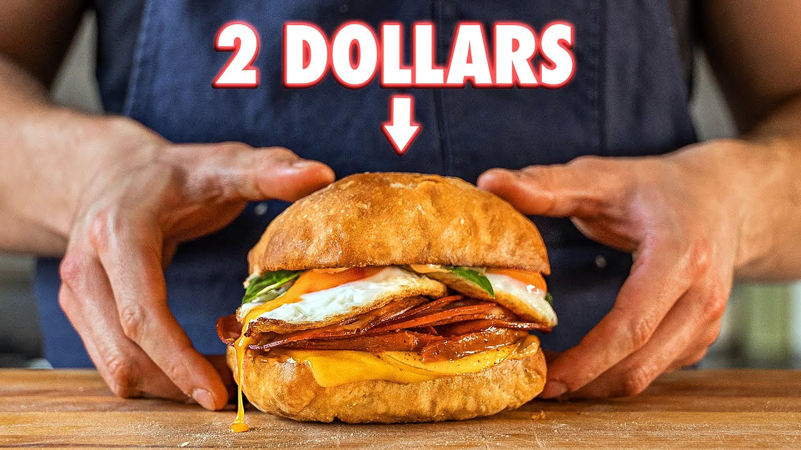

Breakfast Sandwich

Ingredients
Spicy Mayoli
- 1/2 cup (89g) mayonnaise
- 3 cloves garlic, grated
- 2 tablespoons (44g) sriracha
- juice of 1 lemon
- salt and pepper to taste
Filling
- Spicy Mayoli
- 4 slices of gouda cheese
- 4 slices cheddar cheese
- 2 large tomatoes
- 12 good slices mortadella, seared
- 4 large eggs, fried
- Fresh basil leaves
- Vegetable oil
- Salt and pepper to taste
Steps
- In a large saucepan, over medium-high, add enough oil to coat the bottom.
- Once the pan is hot, add the tomatoes in one layer, season them with salt, and sear for 1 to 2 min, or until you get a golden-charr color. Flip the tomatoes, season them and sear for 1 min. Set aside and repeat with the rest of the tomato slices.
- Heat a saucepan over medium-high, with enough oil to coat the bottom, sear the mortadella for 1 min, flip and sear for 20 seconds, repeat this process with the rest of the Mortadella slices, and reserve.
- In a medium saucepan, add enough oil to coat the bottom. Once the oil is hot, crack your eggs, cook until the whites set; pour some of the oil on the whites to finish cooking them, season with salt and pepper. Set it to the side.
- Cut a ciabatta bun in half, toast it.
- Layer down your ciabatta, add a generous layer of mayoli on the bottom and top part of the bun. Next, add one slice of cheddar cheese and one slice of gouda cheese, broil the cheese or torch it until melted, and some charr.
- Add one tomato Brulee slice, 3 or 4 Mortadella slices, one or two fried eggs.
Return to the main page